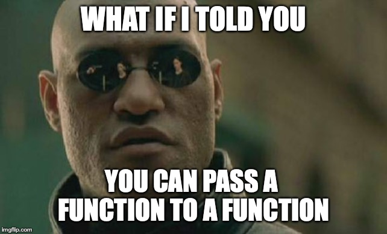

layout: true <div class="footer"><img src="img/KelkooGroupLogo.png" height="50px"/></div> --- class: center, middle # Introduction to Scala --- # Table of content 1. Scala is ... 1. Getting started 1. Expressions, types and values 1. Object and classes 1. Modeling Data with Traits 1. Sequencing computations 1. Collections --- # Scala is ... --- ## Object Oriented In Scala EVERYTHING is an object, even a function. Also multiple-inheritance is possible ! --- background-image: url(img/objectsEverywhere.jpg) ## Object Oriented --- ## Functional Functions are first-class objects. Function can be composed, passed as argument, curried... --- background-image: url(img/highOrderFunction.jpg) ## Functional --- ## Statically Typed with type inference : Let the compiler work for you. --- background-image: url(img/staticVsDynamic.jpg) ## Statically Typed --- background-image: url(img/soItBegins.jpg) # Getting started --- ## Reference Book ### Essential Scala : https://underscore.io/books/essential-scala/ --- # Getting started with Intellij Idea Create a new Scala Project, use sbt template .center[] --- # Getting started with Intellij Idea Create a Scala Worksheet : .center[] --- # Expressions, types and values ## Your First Program In the Scala console or worksheet enter "Hello world!" and press return. You should see an interaction similar to this: ```scala "Hello world!" //Hello world! ``` --- # Expressions, types and values Let’s look at a slightly more complex program : ```scala "Hello world!".toUpperCase //HELLO WORLD! ``` --- # Expressions, types and values ### Expressions Expressions are part of a program’s text. They are the main components of a Scala program. Expressions exist at compile time. ### Values An expression evaluates to a value. A value is information stored in the computer’s memory. It exists at runtime. Expressions have types but values do not. ### Types In Scala all values are objects. Types are restrictions on our programs that limit how we can manipulate objects. --- # Expressions, types and values Enter this in the console : ```scala 2.min(3) ``` This evaluates to a value of type Int. Then enter this in the console : ```scala :type 2 / 0 ``` Then : ```scala 2 / 0 ``` We see that the expression `2 / 0` has type Int even though this expression fails when we evaluate it. --- # Objects An object is a grouping of data and operations on that data. For example, 2 is an object. The data is the integer 2, and the operations on that data are familiar operations like + and -. The operations are known as methods. The data is stored in fields. --- # Method calls We interact with objects by calling methods. A method call is an expression, and thus evaluates to an object. This method call evaluates to a String : ```scala "hello".toUpperCase // HELLO ``` Some methods accept parameters or arguments : ```scala "abcdef".take(3) //abc "abcdef".take(2) //ab ``` Note : some methods return Unit. Unit, written `()`, is the Scala equivalent of Java’s void. --- # Object Literals When we write an object literal we use a declaration, which is a different kind of program to an expression. A declaration does not evaluate to a value. Instead it associates a name with a value. This name can then be used to refer to the value in other code. We can declare an empty object as follows: ```scala object Test {} ``` --- # Object Literals Once we have bound the name Test we can use it in expressions, where it evaluates to the object we have declared. The simplest expression is just the name on its own, which evaluates to the value itself: ```scala Test //res0: Test.type = Test$@137617d4 ``` Note that `Test.type` is a type created just for our object, called a singleton type. --- ## Methods We interact with objects via methods so let’s create an object with a method. ```scala object Test2 { def name: String = "Probably the best object ever" } ``` Here we’ve create a method called name . We can call it in the usual way. ```scala Test2.name //Probably the best object ever ``` --- ## Methods Here’s an object with a more complex method: ```scala object Test3 { def hello(name: String) = "Hello " + name } Test3.hello("Noel") //Hello Noel ``` --- ## Fields An object can also contain other objects, called fields. We introduce these using the keywords val or var, which look similar to def: ```scala object Test4 { val name = "Noel" def hello(other: String): String = name + " says hi to " + other } Test4.hello("Dave") // Noel says hi to Dave ``` --- # Exercises (2.4.5) --- # Conditionals A conditional allows us to choose an expression to evaluate based on some condition. For example, we can choose a string based on which of two numbers is the smallest. ```scala if(1 < 2) "Yes" else "No" ``` Scala’s if statement has the same syntax as Java’s. One important difference is that Scala’s conditional is an expression—it has a type and returns a value. --- # Conditionals The expression that is not selected does not get evaluated. This is apparent if we use an expression with a side-effect. ```scala if(1 < 2) println("Yes") else println("No") // Yes ``` --- # Exercices (2.6.4) --- # Blocks Blocks are expressions that allow us to sequence computations together. They are written as a pair of braces containing sub-expressions separated by semicolons or newlines. Examples : ```scala { println("This is a side-effect") println("This is a side-effect as well") 3 } ``` ``` scala def name: String = { val title = "Professor" val name = "Funkenstein" title + " " + name } ``` --- # Classes A class is a template for creating objects that have similar methods and fields. In Scala a class also defines a type, and objects created from a class all share the same type. Here is a declaration for a simple Person class: ```scala class Person { val firstName = "Noel" val lastName = "Welsh" def name = firstName + " " + lastName } ``` --- # Classes Like an object declaration, a class declaration binds a name (in this case Person) and is not an expression. However, unlike an object name, we cannot use a class name in an expression. A class is not a value, and there is a different namespace in which classes live. ```scala Person // <console>:13: error: not found: value Person // Person // ^ ``` --- # Classes We can create a new Person object using the new operator. Objects are values and we access their methods and fields in the usual way: ```scala val noel = new Person noel.firstName // Noel ``` --- # Classes We can write a method that takes any Person as a parameter: ```scala object alien { def greet(p: Person) = "Greetings, " + p.firstName + " " + p.lastName } ``` ```scala alien.greet(noel) // Greetings, Noel Welsh ``` --- ### Constructors A constructor allows us to pass parameters to new objects as we create them: ```scala class Person(first: String, last: String) { val firstName = first val lastName = last def name = firstName + " " + lastName } ``` ```scala val dave = new Person("Dave", "Gurnell") dave.name // Dave Gurnell ``` Note : The constructor parameters first and last can only be used within the body of the class. We must declare a field or method using val or def to access data from outside the object. --- ### Constructors Constructor arguments and fields are often redundant. Scala provides a short-hand way of declaring both in one go. We can prefix constructor parameters with the val keyword to have Scala define fields for them automatically: ```scala class Person(val firstName: String, val lastName: String) { def name = firstName + " " + lastName } new Person("Dave", "Gurnell").firstName // Dave ``` Note : `val` fields are immutable : they are initialized once after which we cannot change their values. Scala also provides the `var` keyword for defining mutable fields. --- ### Default and Keyword Parameters All Scala methods and constructors support keyword parameters and default parameter values. When we call a method or constructor, we can use parameter names as keywords to specify the parameters in an arbitrary order: ```scala new Person(lastName = "Last", firstName = "First") ``` This comes in doubly useful when used in combination with default parameter values, defined like this: ```scala def greet(firstName: String = "Some", lastName: String = "Body") = "Greetings, " + firstName + " " + lastName + "!" ``` --- ### Default and Keyword Parameters If a parameter has a default value we can omit it in the method call: ```scala greet("Busy") // Greetings, Busy Body! ``` Combining keywords with default parameter values let us skip earlier parameters and just provide values for later ones: ```scala greet(lastName = "Dave") // Greetings, Some Dave! ``` --- # Exercises (3.1.6) --- ## Objects as Functions ### The apply method In Scala, by convention, an object can be “called” like a function if it has a method called apply. Naming a method apply affords us a special shortened call syntax: foo.apply(args) becomes foo(args). ```scala class Adder(amount: Int) { def apply(in: Int): Int = in + amount } ``` ```scala val add3 = new Adder(3) add3.apply(2) add3(4) ``` --- ## Companion objects Sometimes we want to create a method that logically belongs to a class but is independent of any particular object. In Java we would use a static method for this, but Scala has a simpler solution that we’ve seen already: singleton objects. Example : auxiliary constructors ```scala class Timestamp(val seconds: Long) object Timestamp { def apply(hours: Int, minutes: Int, seconds: Int): Timestamp = new Timestamp(hours*60*60 + minutes*60 + seconds) } Timestamp(1, 1, 1).seconds ``` --- ## Case Classes Case classes are an exceptionally useful shorthand for defining a class, a companion object, and a lot of sensible defaults in one go. They are ideal for creating lightweight data-holding classes with the minimum of hassle. Case classes are created simply by prepending a class definition with the keyword case : ```scala case class Person(firstName: String, lastName: String) { def name = firstName + " " + lastName } ``` Whenever we declare a case class, Scala automatically generates a class and companion object. What’s more, the class and companion are pre-populated with some very useful features. --- ### Features of a case class * A field for each constructor argument—we don’t even need to write val in our constructor definition, although there’s no harm in doing so ```scala dave.firstName // Dave ``` * A default `toString` method that prints a sensible constructor-like representation of the class (no more @ signs and cryptic hex numbers): ```scala dave // Person(Dave,Gurnell) ``` --- ### Features of a case class * Sensible `equals`, and `hashCode` methods that operate on the field values in the object This makes it easy to use case classes with collections like Lists, Sets and Maps. It also means we can compare objects on the basis of their contents rather than their reference identity. ```scala new Person("Noel", "Welsh").equals(new Person("Noel", "Welsh") )// true new Person("Noel", "Welsh") == new Person("Noel", "Welsh") // true ``` --- ### Features of a case class * A copy method that creates a new object with the same field values as the current one ```scala dave.copy() // Person(Dave,Gurnell) ``` Note that the copy method creates and returns a new object of the class rather than returning the current one. The copy method actually accepts optional parameters matching each of the constructor parameters. If a parameter is specified the new object uses that value instead of the existing value from the current object. ```scala dave.copy(firstName = "Dave2") // Person(Dave2,Gurnell) dave.copy(lastName = "Gurnell2") // Person(Dave,Gurnell2) ``` --- ### Features of a case class companion object The companion object contains an apply method with the same arguments as the class constructor. Scala programmers tend to prefer the apply method over the constructor for the brevity of omitting new, which makes constructors much easier to read inside expressions: ```scala Person("Dave", "Gurnell") == Person("Noel", "Welsh") // false Person("Dave", "Gurnell") == Person("Dave", "Gurnell")// true ``` Finally, the companion object also contains code to implement an extractor pattern for use in pattern matching. We’ll see this later. --- # Exercises (3.4.5) --- # Pattern matching We can interact with case classes via pattern matching. Pattern matching is like an extended if expression that allows us to evaluate an expression depending on the “shape” of the data. ```scala object Stormtrooper { def inspect(person: Person): String = person match { case Person("Luke", "Skywalker") => "Stop, rebel scum!" case Person("Han", "Solo") => "Stop, rebel scum!" case Person(first, last) => s"Move along, $first" } } ``` ```scala Stormtrooper.inspect(Person("Noel", "Welsh")) // Move along, Noel Stormtrooper.inspect(Person("Han", "Solo")) // Stop, rebel scum! ``` --- # Exercises (3.5.3) --- # Traits Traits are templates for creating classes, in the same way that classes are templates for creating objects. Traits allow us to express that multiple classes share a common super-type. ```scala trait Visitor { def id: String // Unique id assigned to each user def createdAt: Date // Date this user first visited the site // How long has this visitor been around? def age: Long = new Date().getTime - createdAt.getTime } case class Anonymous( id: String, createdAt: Date = new Date() ) extends Visitor case class User( id: String, email: String, createdAt: Date = new Date() ) extends Visitor ``` --- ## Sealed traits When we mark a trait as sealed we must define all of its subtypes in the same file. ```scala sealed trait Visitor { /* ... */ } final case class User(/* ... */) extends Visitor final case class Anonymous(/* ... */) extends Visitor ``` Once the trait is sealed, the compiler knows the complete set of subtypes and will warn us if a pattern matching expression is missing a case. --- # Modelling Data with Traits ## The Product Type Pattern Our first pattern is to model data that contains other data. We might describe this as “A has a B and C”. ```scala case class A(b: B, c: C) ``` or ```scala trait A { def b: B def c: C } ``` --- ## The Sum Type Pattern Our next pattern is to model data that is two or more distinct cases. We might describe this as “A is a B or C”. We write this using the sealed trait / final case class pattern. ```scala sealed trait A final case class B() extends A final case class C() extends A ``` ## Algebraic Data Types An algebraic data type is any data that uses the above two patterns. --- # Exercises (4.4.4) --- # Sequencing Computations ## Generics Let’s start with a collection that is even simpler than our list—a box that stores a single value. We don’t care what type is stored in the box, but we want to make sure we preserve that type when we get the value out of the box. To do this we use a generic type. ```scala final case class Box[A](value: A) ``` The syntax `[A]` is called a type parameter. We can also add type parameters to methods, which limits the scope of the parameter to the method declaration and body: ```scala def generic[A](in: A): A = in ``` ```scala generic[String]("foo") // foo generic(1) // if we omit the type parameter, scala will infer it // 1 ``` --- ## Generic Algebraic Data Types ```scala sealed trait Result[A] case class Success[A](result: A) extends Result[A] case class Failure[A](reason: String) extends Result[A] ``` A Result of type A is either a `Success` of type `A` or a `Failure` with a `String` reason. --- # Functions Functions allow us to abstract over methods, turning methods into values that we can pass around and manipulate within our programs. A function is like a method: we can call it with parameters and it evaluates to a result. Unlike a method a function is value. --- ## Function Types ```scala val sayHi = () => "Hi!" // <function0> sayHi() // Hi! val add1 = (x: Int) => x + 1 // <function1> add1(10) // 11 val sum = (x: Int, y:Int) => x + y // <function2> sum(10, 20) // 30 ``` --- # Tuples A tuple is the generalisation of a pair to more terms. The classes are called `Tuple1[A]` through to `Tuple22[A, B, C, ...]` but they can also be written in the sugared form `(A, B, C, ...)`. ```scala Tuple2("hi", 1) ("hi", 1) ("hi", 1, true) ``` --- # Tuples We can define methods that accept tuples as parameters using the same syntax: ```scala def tuplized[A, B](in: (A, B)) = in._1 tuplized(("a", 1)) ``` We can also pattern match on tuples as follows : ```scala (1, "a") match { case (a, b) => a + b } ``` --- # Sequencing Computation Let's define a generic trait called `Maybe` of a generic type `A` with two subtypes, `Full` containing an `A`, and `Empty` containing no value. ```scala sealed trait Maybe[A] final case class Full[A](value: A) extends Maybe[A] final case class Empty[A]() extends Maybe[A] ``` --- ## Map Imagine : * we have a `List[Int]` and a function `Int => User`, and we want to get a `List[User]` * we have a `Maybe[User]` and a function `User => Order`, and we want a `Maybe[Order]` * we have a sum type representing an error message or a completed order : we have a `Sum[String, Order]` and a function `Order => Double`, and we want `Sum[String, Double]` What these all have in common is we have a type F[A] and a function A => B, and we want a result F[B]. The method that performs this operation is called `map`. --- ## Flatmap Imagine : * we have `List[User]` and a function `User => List[Order]`, and we want `List[Order]` * we have `Maybe[User]` and `User => Maybe[Order]`, and we want `Maybe[Order]` * we have `Sum[String, Order]` and a function `Order => Sum[String, Id]`, and we want `Sum[String, Id]` What these all have in common is we have a type F[A] and a function A => F[B], and we want a result F[B]. The method that performs this operation is called `flatMap`. --- ## Functors and Monads A type like `F[A]` with a `map` method is called a `functor`. If a functor also has a `flatMap` method it is called a `monad`. ```scala def mightFail1: Maybe[Int] = Full(1) def mightFail2: Maybe[Int] = Full(2) def mightFail3: Maybe[Int] = Empty() // This one failed ``` --- ## Functors and Monads We want to run these computations one after another. If any one of them fails the whole computation fails. ```scala mightFail1 flatMap { x => mightFail2 flatMap { y => mightFail3 flatMap { z => Full(x + y + z) } } } ``` The result of this is Empty. If we drop mightFail3, leaving just ```scala mightFail1 flatMap { x => mightFail2 flatMap { y => Full(x + y) } } ``` The computation succeeds and we get `Full(3)`. --- ## Functors and Monads The general idea is a monad represents a value in some context. We use map when we want to transform the value within the context to a new value, while keeping the context the same. We use flatMap when we want to transform the value and provide a new context. --- # Exercises (5.5.4) Use `List` instead of LinkedList in 5.5.4.1. --- # Variance Example : ```scala sealed trait Maybe[A] final case class Full[A](value: A) extends Maybe[A] final case class Empty[A]() extends Maybe[A] ``` Ideally we would like to drop the unused type parameter on Empty. It is not possible because `Maybe[A]` is invariant in terms of `A`. --- ## Covariance A type `Foo[+T]` is covariant in terms of `T`, meaning that `Foo[A]` is a supertype of `Foo[B]` if `A` is a supertype of `B`. ```scala sealed trait Maybe[+A] final case class Full[A](value: A) extends Maybe[A] case object Empty extends Maybe[Nothing] ``` --- ## Contravariance A type `Foo[-T]` is contravariant in terms of T, meaning that `Foo[A]` is a subtype of `Foo[B]` if `A` is a supertype of `B`. ```scala trait Function0[+R] { def apply: R } trait Function1[-A, +B] { def apply(a: A): B } trait Function2[-A, -B, +C] { def apply(a: A, b: B): C } ``` --- ## Contravariance Define a box as follows : ```scala case class Box[A](value: A) { def map[B](func: Function1[A, B]): Box[B] = Box(func(value)) } ``` Try to define `func` with super and sub types of `A` and `B`. --- # Type bounds Type bounds extend to specify subtypes as well as supertypes. The syntax is `A <: Type` to declare `A` must be a subtype of `Type` and `A >: Type` to declare a supertype. ```scala case class WebAnalytics[A <: Visitor]( visitor: A, pageViews: Int, searchTerms: List[String], isOrganic: Boolean ) ``` --- # Sequences A sequence is a collection of items with a defined and stable order. Sequences are one of the most common data structures. ```scala val sequence = Seq(1, 2, 3) // List(1, 2, 3) ``` --- ## Basic operations Accessing elements : ```scala sequence.apply(0) // 1 sequence(0) // sugared syntax sequence(3) // java.lang.IndexOutOfBoundsException: 3 sequence.head // 1 sequence.tail // List(2, 3) sequence.tail.head // 2 sequence.headOption // Some(1) Seq().headOption // None ``` The `Option` class here is Scala’s built-in equivalent of our `Maybe` class from earlier. It has two subtypes `Some` and `None` representing the presence and absence of a value respectively. --- ## Searching for elements The `contains` method tells us whether a sequence contains an element (using == for comparison) : ```scala sequence.contains(2) // true ``` The `find` method returns the first item for which the test returns true : ```scala sequence.find(_ == 3) // Some(3) sequence.find(_ > 4) // None ``` The `filter` method is a variant of find that returns all the matching elements in the sequence: ```scala sequence.filter(_ > 1) // List(2, 3) ``` --- ## Sorting elements We can use the `sortWith` method to sort a list using a binary function : ```scala sequence.sortWith(_ > _) ``` --- ## Appending/prepending elements We can append an element with the `:+` method: ```scala sequence.:+(4) // List(1, 2, 3, 4) ``` ```scala sequence :+ 4 // List(1, 2, 3, 4) ``` We can similarly prepend an element using the `+:` method. ```scala sequence.+:(0) // List(0, 1, 2, 3) ``` It is more idiomatic to call `+:` as an infix operator. The trailing colon makes it right associative, so we write the operator-style expression the other way around: ```scala 0 +: sequence // List(0, 1, 2, 3) ``` Finally we can concatenate entire sequences using the `++` method. --- ## Lists The default implementation of `Seq` is a `List`, which is a classic linked list data structure. We can write an empty list using the singleton object `Nil`. Longer lists can be created by prepending elements in classic linked-list style using the `::` method, which is equivalent to `+:` : ```scala val list = 1 :: 2 :: 3 :: Nil // List(1, 2, 3) 4 :: 5 :: list // List(4, 5, 1, 2, 3) ``` --- # Exercices (6.1.9) --- # Working with sequences ## Map ```scala val sequence = Seq(1, 2, 3) // List(1, 2, 3) sequence.map(elt => elt * 2) // List(2, 4, 6) ``` --- ## FlatMap ```scala Seq("a", "wet", "dog").map(_.permutations.toList) // List(List(a), List(wet, wte, ewt, etw, twe, tew), List(dog, dgo, odg, ogd, gdo, god)) Seq("a", "wet", "dog").flatMap(_.permutations.toList) // List(a, wet, wte, ewt, etw, twe, tew, dog, dgo, odg, ogd, gdo, god) ``` --- ## Folds The job of these methods is to traverse a sequence and accumulate a result. The types are as follows: | Method | We have | We provide | We get | |-----------|---------|-------------------|--------| | foldLeft | Seq[A] | B and (B, A) => B | B | | foldRight | Seq[A] | B and (A, B) => B | B | Example : ```scala Seq(1, 2, 3).foldLeft(0)((accu, elem) => accu + elem) // 6 ``` | Method | Operations | Notes | |------------------------------------|-----------------------|--------------------------------| | `Seq(1, 2, 3).foldLeft(0)(_ + _)` | `(((0 + 1) + 2) + 3)` | Evaluation starts on the left | | `Seq(1, 2, 3).foldRight(0)(_ + _)` | `(1 + (2 + (3 + 0)))` | Evaluation starts on the right | --- ## Foreach Unlike map, `flatMap` and the folds, `foreach` does not return a useful result, we use it purely for its side-effects. ```scala List(1, 2, 3).foreach(num => println("And a " + num + "...")) // And a 1... // And a 2... // And a 3.. ``` | Method | We have | We provide | We get | |-----------|---------|-------------------|--------| | foreach | Seq[A] | A => Unit | Unit | --- ## Exercises (6.2.7) --- ## For comprehensions Scala has special syntax for working with any class that implements map and flatMap, that makes complicated operations simpler to write. This syntax is known as a `for comprehension`. Important : for comprehensions in Scala are very different to the C-style for loops in Java. There is no direct equivalent of either language’s syntax in the other. --- ## For comprehensions We know we can write ```scala Seq(1, 2, 3).map(_ * 2) // List(2, 4, 6) ``` The equivalent program written with a for comprehension is: ```scala for { x <- Seq(1, 2, 3) } yield x * 2 // List(2, 4, 6) ``` --- ## For comprehensions We can write ```scala val data = Seq(Seq(1), Seq(2, 3), Seq(4, 5, 6)) data.flatMap(_.map(_ * 2)) // List(2, 4, 6, 8, 10, 12) ``` The equivalent program written with a for comprehension is: ```scala for { subseq <- data element <- subseq } yield element * 2 // List(2, 4, 6, 8, 10, 12) ``` --- ## For comprehensions A general for comprehension: ```scala for { x <- a y <- b z <- c } yield e ``` translates to: ```scala a.flatMap(x => b.flatMap(y => c.map(z => e))) ``` --- ## For comprehensions Note that if we omit the yield keyword before the final expression, the overall type of the for comprehension becomes Unit. ```scala for { seq <- Seq(Seq(1), Seq(2, 3)) elt <- seq } println(elt * 2) // Note: no 'yield' keyword ``` This version of the for comprehension is executed purely for its side-effects, and any result is ignored. --- # Exercises (6.3.1) --- # Options Option is a generic sealed trait with two subtypes : `Some` and `None`. ```scala def readInt(str: String): Option[Int] = if(str matches "-?\\d+") Some(str.toInt) else None ``` ```scala readInt("123") // Some(123) readInt("abc") // None ``` --- # Extracting Values from Options ## The getOrElse method ```scala readInt("123").getOrElse(0) // 123 readInt("abc").getOrElse(0) // 0 ``` --- ## Pattern matching ```scala readInt("123") match { case Some(number) => number + 1 case None => 0 } //124 ``` --- ## Map and flatMap One way of thinking about an Option is as a sequence of 0 or 1 elements. Option supports many of the sequence operations we have seen so far. ```scala def sum(optionA: Option[Int], optionB: Option[Int]): Option[Int] = optionA.flatMap(a => optionB.map(b => a + b)) ``` ```scala sum(readInt("1"), readInt("2")) // Some(3) sum(readInt("1"), readInt("b")) //None sum(readInt("a"), readInt("2")) //None sum(readInt("1"), readInt("b")).getOrElse(0) //0 ``` `Option` and `Seq` are also compatible in some sense. We can turn a `Seq[Option[A]]` into a `Seq[A]` using `flatMap` : ```scala Seq(readInt("1"), readInt("b"), readInt("3")).flatMap(x => x) //List(1, 3) ``` --- ## Options as Flow Control Because Option supports `map` and `flatMap`, it also works with for comprehensions. ```scala val optionA = readInt("123") val optionB = readInt("234") for { a <- optionA b <- optionB } yield a + b ``` --- # Exercises (6.5.1) --- # Monads We’ve seen that by implementing a few methods (map, flatMap, and optionally filter and foreach), we can use any class with a for comprehension. Such a class is called a `monad`. A monad is a generic type that allows us to sequence computations while abstracting away some technicality. We do the sequencing using for comprehensions, worrying only about the programming logic we care about. --- # Monads * `Option` is a monad that allows us to sequence computations on optional values * without worrying about the fact that they may or may not be present * `Seq` is a monad that allows us to sequence computations that return multiple possible answers * without worrying about the fact that there are lots of possible combinations involved * `Future` is another popular monad that allows us to sequence asynchronous computations * without worrying about the fact that they are asynchronous --- # Exercices (6.6.2) --- ## For Comprehensions Redux It’s quite common to only process selected elements. We can do this with comprehensions by adding an if clause after the generator expression. So to process only the positive elements of sequence we could write ```scala for(x <- Seq(-2, -1, 0, 1, 2) if x > 0) yield x // List(1, 2) ``` --- ## Parallel iteration Say we have the sequences `Seq(1, 2, 3)` and `Seq(4, 5, 6)` and we want to add together elements with the same index yielding `Seq(5, 7 , 9 ) `. If we write ```scala for { x <- Seq(1, 2, 3) y <- Seq(4, 5, 6) } yield x + y // List(5, 6, 7, 6, 7, 8, 7, 8, 9) ``` We traverse the first element from the first sequence and then all the elements of the second sequence, then the second element from the first sequence and so on. --- ## Parallel iteration The solution is to zip together the two sequences, giving a sequence containing pairs of corresponding elements ```scala Seq(1, 2, 3).zip(Seq(4, 5, 6)) // List((1,4), (2,5), (3,6)) ``` With this we can easily compute the result we wanted ```scala for(x <- Seq(1, 2, 3).zip(Seq(4, 5, 6))) yield { val (a, b) = x a + b } // List(5, 7, 9) ``` --- ## Parallel iteration Sometimes you want to iterate over the values in a sequence and their indices. For this case the zipWithIndex method is provided. ```scala for(x <- Seq(1, 2, 3).zipWithIndex) yield x // List((1,0), (2,1), (3,2)) ``` Note that `zip` and `zipWithIndex` are available on all collection classes, including `Map` and `Set`. --- ## Pattern matching The pattern on the left hand side of a generator is not named accidentally. We can include any pattern there and only process results matching the pattern. This provides another way of filtering results. So instead of: ```scala for(x <- Seq(1, 2, 3).zip(Seq(4, 5, 6))) yield { val (a, b) = x a + b } ``` we can write: ```scala for((a, b) <- Seq(1, 2, 3).zip(Seq(4, 5, 6))) yield a + b ``` --- ## Intermediate Results It is often useful to create an intermediate result within a sequence of generators. We can do this by inserting an assignment expression like so : ```scala for { x <- Seq(1, 2, 3) square = x * x y <- Seq(4, 5, 6) } yield square * y // List(4, 5, 6, 16, 20, 24, 36, 45, 54) ``` --- # Maps A Map is a collection that maps keys to value ```scala val example = Map("a" -> 1, "b" -> 2, "c" -> 3) example("a") // 1 example.get("a") // Some(1) ``` As with Seq, the default implementation of Map is immutable. We add and remove elements by creating new maps as opposed to mutating existing ones. --- # Sets Sets are unordered collections that contain no duplicate elements. --- # Exercices (6.8.3) ---